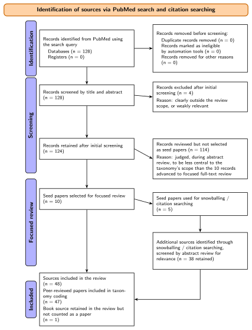
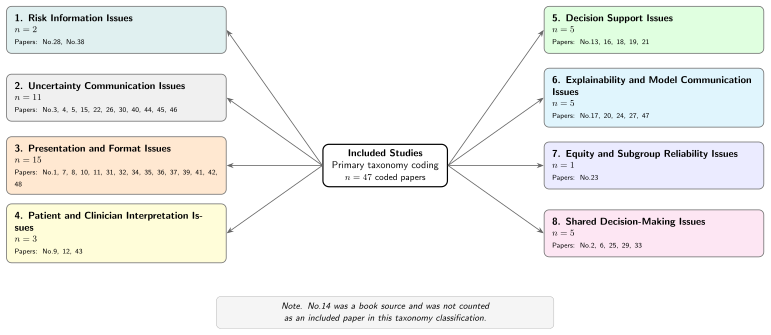

Publication
A Taxonomy of Issues in Healthcare Data-Driven Communication for Clinical Decision-Making
- 1Dell Medical School, The University of Texas at Austin, Austin, TX, USA
- 2University of Central Florida, Orlando, FL, USA
Abstract
Healthcare decision-making increasingly relies on data-driven tools, including risk prediction models, clinical decision support systems, dashboards, and algorithmic recommendations. The clinical value of these tools depends not only on model performance but also on whether their outputs are communicated in ways that clinicians and patients can interpret, appropriately trust, and use. Reporting standards such as TRIPOD+AI specify what model developers should report to readers of the scientific literature, but they do not provide an equivalent framework for what a deployed model should communicate at the point of use. We developed a preliminary taxonomy of issues in healthcare data-driven communication through a structured synthesis of 48 sources identified by PubMed search and citation searching. The taxonomy comprises eight dimensions: risk information; uncertainty communication; presentation and format; patient and clinician interpretation; decision support; explainability and model communication; equity and subgroup reliability; and shared decision-making. Each dimension is linked to the clinical decision-making risk it poses and to a corresponding opportunity for intervention. Coverage in the coded corpus was uneven, with equity and subgroup reliability informed by a single study. An illustrative application to three published delirium prediction studies shows how the taxonomy can distinguish communication practices in concrete prediction model settings. These findings identify clinician- and patient-facing communication as an important and comparatively underspecified component of prediction model deployment.
Methods
How the taxonomy was built
We developed the taxonomy through a structured synthesis of the literature using a directed content analysis approach. An initial organizing structure, informed by prior work, was applied and iteratively revised as additional themes emerged. The objective was conceptual coverage of ways in which data-driven communication can break down in clinical decision-making, rather than exhaustive retrieval or estimation of the prevalence of individual issue types.
PubMed search across three concept blocks
- Communication of risk, probability, and uncertainty
- Healthcare and clinical settings, including the electronic health record
- Artificial intelligence, prediction models, and clinical decision support
Terms were combined within blocks and intersected across them. Animal-only studies were removed with the filter animals[mh] NOT humans[mh].
Purposive selection and citation searching
- 128Records screened by title and abstract
- 124Judged topically relevant (4 excluded)
- 10Seed papers advanced to focused full-text review (114 not advanced)
- 5Seeds used for backward and forward citation searching
- +38Additional sources retained after abstract review
- 48Sources in the final corpus: 47 coded articles and 1 book retained for context
One coded paper also served as a conceptual anchor for the initial category structure.
Common extraction and iterative synthesis
Each coded source was characterized with a common extraction framework covering clinical and decision context, intended audience, the information communicated, communication format, uncertainty and reliability, human interpretation and decision implications, and an emerging taxonomy theme.
Categories were merged, split, relabeled, and promoted to higher-level dimensions as the coded evidence suggested clearer boundaries. All screening, extraction, and initial thematic coding were performed by a single author (B.G.), and the category structure was reviewed and revised in discussion with the co-authors.

Search and extraction details
Table 1. PubMed search strategy and current literature corpus
| Component | Search or selection focus | Purpose in this review |
|---|---|---|
| Primary database search | PubMed search combining terms related to risk communication, probability communication, uncertainty communication, healthcare, clinical settings, electronic health records, artificial intelligence, machine learning, prediction models, and clinical decision support. | To identify literature at the intersection of healthcare data-driven communication, risk and uncertainty communication, and clinical decision-making. |
| Communication concepts | Risk communication; patient risk communication; communicating probabilities; probability communication; communicating numbers; communication of risk; uncertainty communication; communication of uncertainty. | To capture studies focused on how quantitative, probabilistic, or uncertain information is communicated to patients, clinicians, or other decision-makers. |
| Healthcare and clinical context | Healthcare; health care; medical; clinical; clinicians; electronic health records; electronic medical records; electronic patient records; EHR; EMR; EPR. | To restrict the review scope to healthcare, clinical, and health information system contexts. |
| Risk, probability, and uncertainty concepts | Risk; probability; uncertainty; ambiguity; numeracy; quantitative information; measurement error; confidence intervals. | To capture core concepts related to uncertainty representation, probabilistic reasoning, and interpretation of quantitative health information. |
| AI, prediction, and decision support concepts | Artificial intelligence; AI; machine learning; deep learning; clinical prediction models; prediction models; algorithms; clinical decision support; decision support systems; risk prediction; predictive models. | To identify studies involving data-driven tools, predictive models, algorithmic outputs, and clinical decision support systems. |
| Exclusion criterion | Animal-only studies were excluded using the PubMed filter animals[mh] NOT humans[mh]. | To focus the review on human healthcare and clinical decision-making contexts. |
| Current working corpus | The current extraction table contains 48 entries: 10 seed papers selected for focused full-text review, 5 of which were used for backward and forward citation searching (snowballing) that identified 38 additional sources after abstract-review screening for relevance. Of the 48 total sources, 47 peer-reviewed papers were included in taxonomy coding and 1 book source was retained for context but not coded; one of the 47 coded papers additionally served as a conceptual anchor for the taxonomy's initial category structure. | To support preliminary taxonomy development, literature synthesis, and identification of recurring issues in healthcare data-driven communication. |
Table 2. Data extraction framework for taxonomy development
| Extraction domain | Extracted information | Role in taxonomy development |
|---|---|---|
| Bibliographic and study information | Title; first author; year; journal; article type; priority level. | Documents the source, publication context, and relevance of each article in the working corpus. |
| Clinical and decision context | Clinical context; decision context; target audience, including patients, clinicians, caregivers, researchers, or system designers. | Identifies where data-driven communication occurs and whose decisions or interpretations may be affected. |
| Communicated information | What is being communicated, including risk estimates, probabilities, uncertainty, prediction results, model outputs, treatment outcomes, or recommendations. | Clarifies the object of communication and helps distinguish risk communication, uncertainty communication, model communication, and decision support communication. |
| Communication format and approach | Format or approach, including decision aids, web-based tools, dashboards, visualizations, risk calculators, alerts, printed reports, or conceptual frameworks. | Captures how information is presented and supports comparison across textual, numeric, visual, and interactive communication formats. |
| Uncertainty and reliability | Whether uncertainty is addressed; type of uncertainty; model or tool type; performance or reliability information. | Supports identification of recurring problems related to missing uncertainty, unclear confidence, calibration, model reliability, and appropriate use conditions. |
| Human interpretation and decision implication | Whether human interpretation is considered; action or decision implication; key finding. | Links communication issues to clinical decision-making, shared decision-making, workflow fit, trust, overtrust, undertrust, and actionability. |
| Emerging taxonomy theme | Potential theme derived from each article. | Provides the analytic bridge from individual papers to higher-level taxonomy dimensions and subtypes. |
Limitations
- A directed, scoping synthesis rather than an exhaustive systematic review. The database search was limited to PubMed, which likely underrepresents studies indexed primarily in computing, visualization, and human factors venues.
- Purposive selection. Only 10 of the 124 records judged topically relevant were advanced as seed papers. Uneven coverage across dimensions is not evidence that some problems are more common or important than others.
- A single coder. Individual records were not independently coded, and no inter-rater agreement statistics were computed.
- A descriptive framework. The risk and intervention mappings in Table 4 have not been empirically validated.

Citation
Cite this work
Reference
Guo B, Zhou J, Fu Y, Fu S. A taxonomy of issues in healthcare data-driven communication for clinical decision-making. Manuscript in preparation; 2026.
BibTeX
@unpublished{guo2026taxonomy,
title = {A Taxonomy of Issues in Healthcare Data-Driven
Communication for Clinical Decision-Making},
author = {Guo, Barney and Zhou, Jiawei and Fu, Yu and Fu, Sunyang},
note = {Manuscript in preparation},
year = {2026}
}